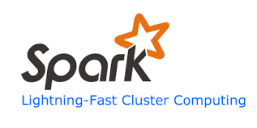

Exercise in exercise analysis
Jan Macháček @honzam399
TODO: Some intro what is Spark? TODO: Spark Cluster! TODO: Distributed, fault tolerant, scalable ML!


class JobManager(
override val master: String,
override val config: Config)
extends Actor
with Driver
with ActorLogging
with PipeToSupport {
override def receive: Receive = {
case BatchJobSubmit('Suggestions) ⇒
submit(Job[SuggestionsJob], ()).pipeTo(self)
}
}

val userFilter = new UserFilter()
val normalizer = new ZScoreNormalizer()
val intensityFeatureExtractor = new IntensityFeatureExtractor()
val intensityPredictor = new LinearRegression()
.setLabelCol("label")
.setFeaturesCol("features")
.setPredictionCol("predictions")
class IntensityFeatureExtractor extends Transformer {
import IntensityFeatureExtractor._
override def transform(dataset: DataFrame, paramMap: ParamMap): DataFrame = {
import dataset.sqlContext.implicits._
val useHistory = paramMap.get(useHistoryParam).get
val labelAndFeatures = dataset
.select("sessionProps.intendedIntensity")
.rdd
.map(_.getDouble(0))
.sliding(useHistory + 1)
.map(x => (x.head, Vectors.dense(x.tail)))
.toDF("intensityLabel", "intensityFeatures")
labelAndFeatures
}
override def transformSchema(schema: StructType, paramMap: ParamMap): StructType =
StructType(Array(StructField("intensityLabel", DoubleType, true), StructField("intensityFeatures", VectorType.VectorUDT, true)))
}

implicit val sqlContext = new org.apache.spark.sql.SQLContext(sc)
import sqlContext.implicits._
val events = sc.eventTable().cache().toDF()
val pipeline = new Pipeline().setStages(Array(
userFilter,
normalizer,
intensityFeatureExtractor,
intensityPredictor
))
getEligibleUsers(events, sessionEndedBefore)
.map { user =>
val model = pipeline.fit(
events,
ParamMap(ParamPair(userIdParam, user)))
val testData = //prepare test data
val predictions = model.transform(testData)
submitResult(userId, predictions, config)
}